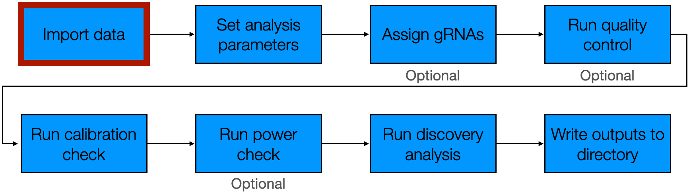

This vignette describes how to import single-cell CRISPR screen data
into sceptre, which is the first step of the
sceptre pipeline.

Users either can import data directly from the output of an existing
software package (e.g., 10X CellRanger or the Parse Biosciences count
matrix generation program) or from a specified set of R objects. We
recommend that users import data from the output of an existing software
package, as doing so decreases the probability of error. We begin by
loading the sceptre package.
Import data from an existing software package
sceptre links up with two programs for upstream
processing of single-cell CRISPR screen data: 10X Cellranger and the
analogous software tool developed by Parse Biosciences. (We refer to the
latter program as the “Parse program.”) We describe how to import data
from each of these tools below.
Import from 10X CellRanger
The Get Started vignette (vignette("sceptre")) describes
how to import data from 10X CellRanger. We include a minimal working
example here.
directories <- paste0(system.file("extdata", package = "sceptre"), "/highmoi_example/gem_group_", 1:2)
data(grna_target_data_frame_highmoi)
sceptre_object <- import_data_from_cellranger(directories = directories,
moi = "high",
grna_target_data_frame = grna_target_data_frame_highmoi)Add extra covariates
import_data_from_cellranger() and
input_data_from_parse() compute the covariates
grna_n_nonzero, grna_n_umis,
response_n_nonzero, response_n_umis,
response_p_mito, and batch. Users may wish to
supply additional covariates (e.g., cell cycle or cell type) to
sceptre. To do so, users can pass a data frame
extra_covariates containing additional covariates to
import_data_from_cellranger() or
input_data_from_parse(). Below, we simulate an additional
covariate cell_type and pass this covariate as an argument
to the data import function.
# simulate an extra covariate, namely cell type
cell_type <- sample(x = paste0("type_", 1:3), size = 45919, replace = TRUE) |> factor()
extra_covariates <- data.frame(cell_type = cell_type)
# import data, passing the the extra covariates as an argument
sceptre_object <- import_data_from_cellranger(directories = directories,
moi = "high",
grna_target_data_frame = grna_target_data_frame_highmoi,
extra_covariates = extra_covariates)The additional covariate of cell_type is printed in the
“covariates” field when we evaluate sceptre_object in the
console.
sceptre_object## An object of class sceptre_object.
##
## Attributes of the data:
## • 45919 cells
## • 526 responses
## • High multiplicity-of-infection
## • 70 targeting gRNAs (distributed across 35 targets)
## • 25 non-targeting gRNAs
## • 7 covariates (batch, cell_type, grna_n_nonzero, grna_n_umis, response_n_nonzero, response_n_umis, response_p_mito)Import data from a collection of R objects
Users also can import data into sceptre from a specified
set of R objects. This data import strategy is most appropriate for
users employing less standard data preprocessing pipelines to generate
the response and gRNA count matrices. We use the high MOI-CRISPRi data
as a working example. We can obtain these data in R matrix and data
frame format as follows.
data(highmoi_example_data)
response_matrix <- highmoi_example_data$response_matrix # response matrix
grna_matrix <- highmoi_example_data$grna_matrix # grna matrix
extra_covariates <- highmoi_example_data$extra_covariates # batch information
response_names <- highmoi_example_data$gene_names # response names
grna_target_data_frame <- grna_target_data_frame_highmoi # gRNA target data frameWe call the function import_data() to import the data
from a collection of R objects. import_data() takes several
arguments: response_matrix, grna_matrix,
grna_target_data_frame, moi,
extra_covariates, and response_names. The
following figure summarizes the main inputs to this function.
The main data objects involved in a single-cell CRISPR screen analysis: a response matrix, a gRNA matrix, a data frame of extra covariates (optional), and a gRNA target data frame.
We describe the inputs below.
-
response_matrixis the matrix of response UMI counts. The responses should be in the rows and the cells in the columns. The row names of theresponse_matrixshould be the response IDs. The first ten rows and columns of the exampleresponse_matrixare as follows.response_matrix[1:10,1:10]## 10 x 10 sparse Matrix of class "dgTMatrix" ## ## ENSG00000069275 4 6 10 9 4 13 8 8 10 8 ## ENSG00000117222 2 1 . 1 1 . . . . 1 ## ENSG00000117266 . . . . . . . . . . ## ENSG00000117280 . . . 1 . . . . . 1 ## ENSG00000133059 . . . . . 1 . 2 . 1 ## ENSG00000133065 . . . . . . . 2 . 1 ## ENSG00000133069 . . . . . . . . . . ## ENSG00000158711 . . . . . . . 1 . . ## ENSG00000158715 . . . . . . . . . . ## ENSG00000162873 . . . . . . . . . . -
grna_matrixis the matrix of gRNA UMI counts. The gRNAs should be in the rows and the cells in the columns. The row names ofgrna_matrixshould be the gRNA IDs. The first ten rows and columns of the examplegrna_matrixare as follows.grna_matrix[1:10,1:10]## 10 x 10 sparse Matrix of class "dgTMatrix" ## ## grna_CCGGGCG . 8 . . . . . . . . ## grna_TGGCGGC . . . . . . . . . . ## grna_AAGGCCG . . . . . . . . . . ## grna_GACGCCG . . . . . . . . . . ## grna_CACACCC . . . . . 25 . . . . ## grna_GCTCACA . . . . . . . . . . ## grna_CTCTGAG . . . . . . . . . . ## grna_GCGCCCG . . . . . . . . . . ## grna_GAGCGTG . . . . . . . . . . ## grna_GCTCTGC . . . . . . . . . .
response_matrix and grna_matrix should be
stored in one of the following formats: matrix,
dgTMatrix, dgCMatrix, or
dgRMatrix.
-
grna_target_data_frameis the data frame mapping each gRNA to its target. Thegrna_target_data_framethat we pass toimport_data()is exactly the same as the one that we pass toimport_data_from_cellranger(). Seevignette("sceptre")for more information about this argument.grna_target_data_frame[c(1:4, 21:24, 80:83),]## grna_id grna_target chr start end ## 1 grna_CCGGGCG ENSG00000069482 chr11 68451943 68451958 ## 2 grna_TGGCGGC ENSG00000069482 chr11 68451958 68451974 ## 3 grna_AAGGCCG ENSG00000100316 chr22 39715775 39715790 ## 4 grna_GACGCCG ENSG00000100316 chr22 39715790 39715806 ## 21 grna_TCTTGAC candidate_enh_1 chr1 205720419 205720623 ## 22 grna_TGATCGC candidate_enh_1 chr1 205720623 205720828 ## 23 grna_ATAGGAG candidate_enh_10 chr19 19475680 19475878 ## 24 grna_GCAGGCA candidate_enh_10 chr19 19475878 19476077 ## 80 grna_TATTCGT non-targeting <NA> NA NA ## 81 grna_GACCTCC non-targeting <NA> NA NA ## 82 grna_TTTCTCT non-targeting <NA> NA NA ## 83 grna_AATGAGG non-targeting <NA> NA NA -
moiis a string specifying the MOI of the dataset, either “high” or “low”. This argument serves the same function as it does inimport_data_from_cellranger(). Seevignette("sceptre")for more information.moi <- "high" -
extra_covariates(optional) is a data frame specifying cell-specific covariates beyond those thatsceptrecan compute.import_data()computes the covariatesgrna_n_nonzero,grna_n_umis,response_n_nonzero,response_n_umis, andresponse_p_mito.import_data()does not computebatch, asimport_data()does not have access to batch information. Thus,batch— alongside any other relevant covariates, such as cell type — should be included in theextra_covariatesdata frame.extra_covariates[c(1:3, 30001:30003),,drop = FALSE]## batch ## 1 b1 ## 2 b1 ## 3 b1 ## 30001 b2 ## 30002 b2 ## 30003 b2 -
response_names(optional) is a vector of human-readable response names.response_namesis used to determine which of the responses (if any) are mitochondrial genes for the purpose of computing theresponse_p_mitocovariate.head(response_names)## [1] "NUCKS1" "RBBP5" "CDK18" "RAB29" "DSTYK" "SLC41A1"
We pass the arguments response_matrix,
grna_matrix, grna_target_data_frame,
moi, extra_covariates, and
response_names to import_data(), which
initializes a sceptre_object.
sceptre_object <- import_data(response_matrix = response_matrix,
grna_matrix = grna_matrix,
grna_target_data_frame = grna_target_data_frame,
moi = moi,
extra_covariates = extra_covariates,
response_names = response_names)